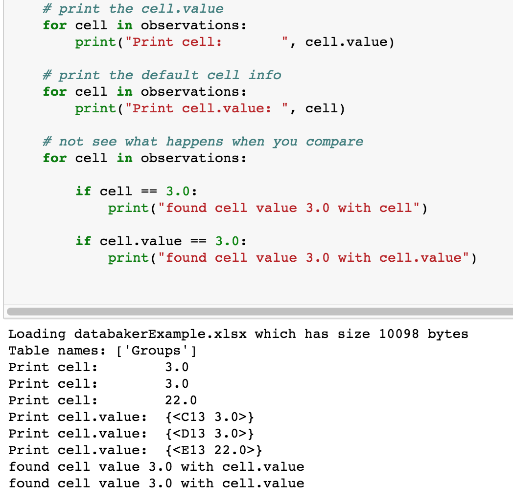

Selection, Tips & Tricks¶
The following are useful approaches to data selection.
Adding and Subtracting Cells¶
Probably the most powerful feature of databaker is the ease of adding or subtracting selections form each other.
Consider the following:
allData = tab.excel_ref(“A2”).expand(DOWN).expand(RIGHT)
footer = tab.excel_ref(“A50”).expand(DOWN).expand(RIGHT)
dataIWant = allData - footer
Which does exactly what you’d think. Resulting in everything to the right and below A2 being added to the dataIWant variable - with anything to the right or below A50 removed.
Adding selections together is accomplished with the “|” symbol.
So foo = tab.excel_ref(“A2”) | tab.excel_ref(“E5”) results in a selection containing just cells A2 and E5.
Looking at XYCells¶
The ‘cells’ we talk about when selecting using databaker represent a python object called an xyCell.
If you print one of those cells it will return a call reference and value,
There are times where you will want to reference the value directly (for IF statments and other comparisons). You can do this by referencing the .value property of the cell as shown below:
Hamcrest¶
Hamcrest is a text processing library for python that is incorporated into databaker. A full list of the filters it supports can be found here: